AUTOMATIC TRANSMISSION UNIT > DISASSEMBLY > Preparation

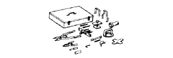 | 09350-30020 | TOYOTA Automatic Transmission Tool Set |
| (09350-07040) | No. 2 Piston Spring Compressor | |
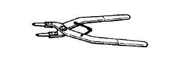 | (09350-07060) | No. 1 Snap Ring Expander |
| (09350-07070) | No. 2 Snap Ring Expander | |
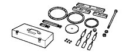 | 09380-60010 | Set,Automatic Transmisson Brake Spring Compressor |
| (09381-05040) | Nut | |
| (09381-05050) | Washer | |
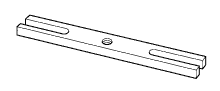 | (09381-06010) | Hanger A |
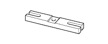 | (09381-06020) | Hanger B |
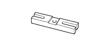 | (09381-06030) | Hanger C |
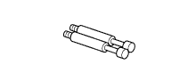 | (09381-06040) | Arm A |
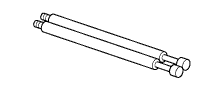 | (09381-06050) | Arm B |
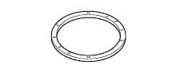 | (09381-06060) | Ring A |
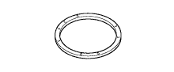 | (09381-06070) | Ring B |
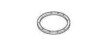 | (09381-06080) | Ring C |
| (09381-06090) | Attachment | |
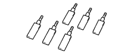 | (09381-06100) | Crow |
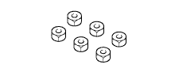 | (09381-06110) | Nut |
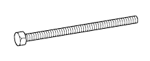 | (09381-06120) | Bolt |
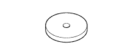 | (09381-06130) | Plate |
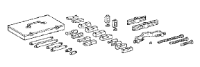 | 09950-40011 | Puller B Set |
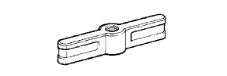 | (09951-04010) | Hanger 150 |
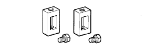 | (09952-04010) | Slide Arm |
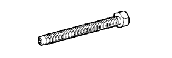 | (09953-04020) | Center Bolt 150 |
| (09954-04010) | Arm 25 | |
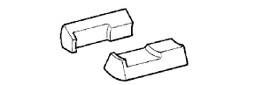 | (09955-04031) | Claw No.3 |
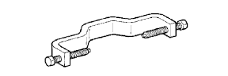 | (09958-04011) | Holder |
 | 09950-60010 | Replacer Set |
| (09951-00650) | Replacer 65 | |
 | 09950-70010 | Handle Set |
 | (09951-07150) | Handle 150 |
| Calipers | - |
| Cylinder gauge | - |
| Dial indicator | - |
| Feeler gauge | - |
| Micrometer | - |
| Straightedge | - |
| Torque wrench | - |
| V block | - |
| Vernier calipers | - |
| Automatic transmission fluid: Dry fill | 10.4 liters (11.0 US qts, 9.2 Imp. qts) | Toyota Genuine ATF WS |
| Automatic transmission fluid: Drain and refill | 3.0 liters (3.2 US qts, 2.6 Imp. qts) |
 | 09031-00030 | Pin Punch | - |
 | 09082-00040 | TOYOTA Electrical Tester | - |
| Toyota Genuine Seal Packing 1281, Three Bond 1281 or equivalent | - |
| Toyota Genuine Adhesive 1344, Three Bond 1344 or equivalent | - |